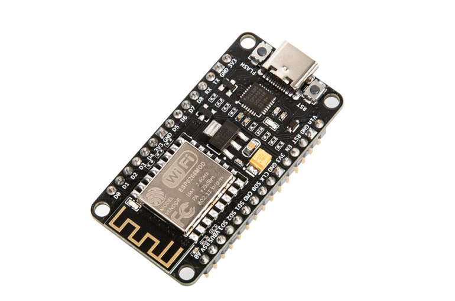
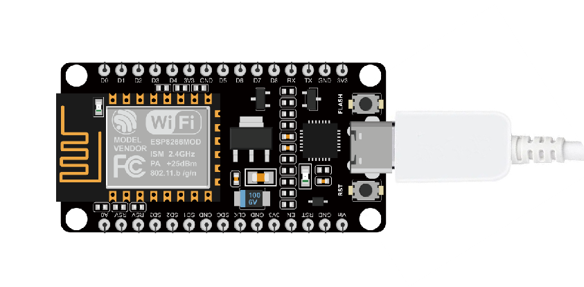
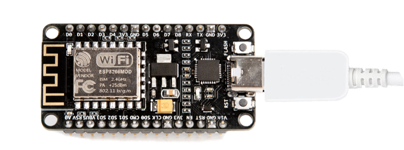
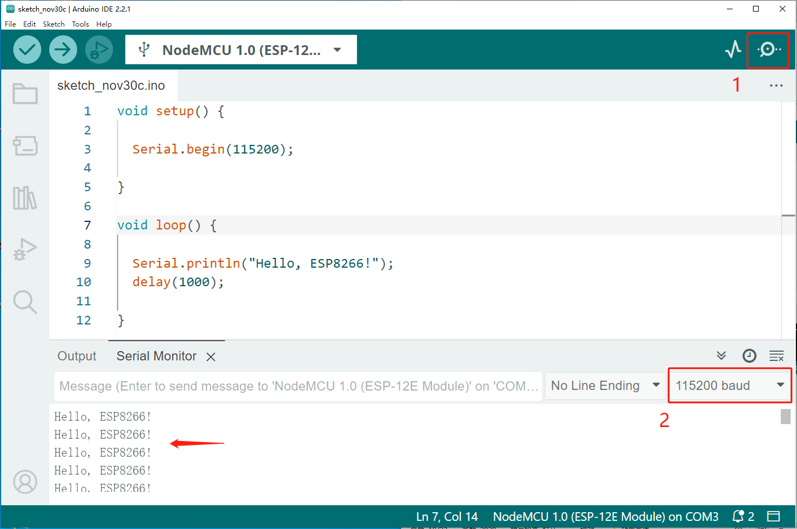

QA010 ESP8266 V1.0
1.Introduction
ACEBOTT-ESP8266-V1.0 is a Wi-Fi minimal system board developed by ACEBOTT. The product features the ESP8266 as its core processor, which integrates the industry-leading Tensilica L106 ultra-low power 32-bit microcontroller in a small form factor package. It has a 16-bit streamlined mode, with main frequencies supporting 80 MHz and 160 MHz, and supports RTOS. It integrates Wi-Fi MAC/BB/RF/PA/LNA. The ESP-12F Wi-Fi module supports the standard IEEE802.11 b/g/n protocol and a complete TCP/IP protocol stack. Users can use this module to add networking capabilities to existing devices or build standalone network controllers. The ESP8266 is a high-performance wireless SoC that offers maximum practicality at minimal cost, providing endless possibilities for embedding Wi-Fi functionality into other systems.
The ESP8266 possesses a complete and self-contained Wi-Fi network functionality, capable of standalone application as well as being used as a slave device attached to other host MCUs. When employed as a standalone application, the ESP8266 can boot directly from external flash. The built-in high-speed buffer memory helps enhance system performance and optimize storage systems. Alternatively, the ESP8266 can serve as a Wi-Fi adapter for any microcontroller-based design via SPI/SDIO interface or UART interface. Its powerful on-chip processing and storage capabilities allow integration of specific devices such as sensors and other applications through GPIO ports, significantly reducing initial development costs.
2.Features
Complete 802.11b/g/n Wi-Fi SoC module
Integrated with Tensilica L106 ultra-low power 32-bit microcontroller, supporting main frequencies of 80 MHz and 160 MHz, with RTOS support
Integrated with 1 channel 10-bit high-precision ADC
Supports UART/GPIO/ADC/PWM/SPI/I2C interfaces
Integrated Wi-Fi MAC/BB/RF/PA/LNA
The serial port baud rate can reach up to 4Mbps
Embedded LwIP protocol stack
General AT commands for quick familiarization
3.Specifications
Parameters |
Value/Description |
|---|---|
Size |
49.6X25.4(mm) |
Power supply |
Type-c |
Antenna type |
On-board PCB antenna |
Operating temperature |
-40°C - 85°C |
Supported interfaces |
UART/GPIO/ADC/PWM/SPI/I2C |
Number of I/O ports |
9 |
Serial port baud rate |
Supports baud rates from 110 to 4608000 bps, defaulting to 115200 bps |
Security |
WEP/WPA-PSK/WPA2-PSK |
4.Sample Code
Connect the board to the computer using a Type-C data cable: Select “ESP8266” -> “NodeMCU 1.0(ESP-12E Module)” from the Tools > Board menu. Choose the appropriate Port. And upload it to the board using the Upload button.
（1）Wiring Diagram
（2）Sample Code
1void setup() {
2 Serial.begin(115200);//The serial port baud rate is set to 115200
3}
4void loop() {
5 Serial.println("Hello, ESP8266!");//Serial port printing "Hello, ESP8266!"
6 delay(1000);
7}
5.Test Result
After uploading the program, open the serial monitor in the Arduino IDE to observe the continuous serial printing of “Hello, ESP8266!”.
 6.Related Resources